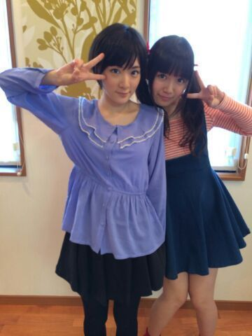
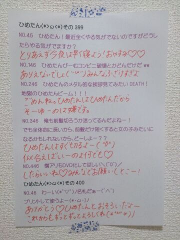

| 2014/05 09 Fri | ひめたん-OoO-その442 |
告知ではじまって申し訳ない／(^o^)＼
5/7 東京スポーツ
5/8 週刊ヤングジャンプ
5/9 BOMB
チェックしてみてくださいねー
よろしくお願いします♪

写メはヤンジャンヽ(〃v〃)ノ
うしろにチラッと写ってるのは
多分 ななせまる (西野七瀬ちゃん)。
「干物妹！うまるちゃん」の
海老名菜々ちゃんに
なりきってみたってことで
現場でもずっと中元さんじゃなく
「えびちゃーん♪」って呼ばれてたの
ヘアゴムが海老名ちゃんって感じでしょ？
楽しんでみていただけるといいな。
よろしくお願いします！
東スポさんの方では
昭和に流行ったギャグを想像で再現してみたり
(これが結構難しかった......)
昭和のベストセラーのタイトルを当てる
ペーパーテストしたり
テレホンカードについて取材したり！
楽しかったなあー(＊><＊)
こちらもよろしくお願いしますね♪
さらに新しい告知をさせてくださいなー
月刊エンタメさんに
取材していただきました！
詳しいことは情報解禁されたら
またみなさんにお伝えします
楽しみに待っててくださーいね♪

今日は撮影してきたよー
明日も撮影してくるよー
なんかお仕事してお稽古して
毎日メンバーみんなに会えて幸せだな
なんか充実してるなーるーん♪
そういや昨日は乗り換えを間違えまくって
ほんっっとに間違えすぎて
異国の地に来たみたいになって
泣きそうになったんだよ。゜(゜´｀゜)゜。
乗る路線を間違えて戻り、
乗る方向を間違えて戻り、
直通だと思ってたら当駅止まりですってなって
どこから乗ればいいのーってなったり
2回の乗り換えで済むルートなはずなのに
5回くらい乗り換えしたよーこれ盛ってないよ
もう電車乗りたくない......

 うちのニワトリがこけこっこーって鳴きます
うちのニワトリがこけこっこーって鳴きます
どうしたらいいですか？
何かもうどこから聞いたらいいんかわかんない
飼ってるのが事実だとしましょう
こけこっこーって鳴くとしましょう
え？だから何(゜゜)むしろ健全だばーか
ひめたん ！
ひめたん推しじゃないんだけど
ひめたんのブロクは大好きです
こんなわたしでもいい？
嬉しい(＊^^＊)ありがとう！
もちろん大歓迎だよー
これからもたくさんひめたんの日記に
遊びに来てね！待ってるからねーっ
今、好きな人がいます！
でも振り向く気配がありません(T T)
どうやったら振り向きますか？
背後からドロップキックを
くらわせたらいいですか？
うん、とりあえずその日の晩は
あなたのことが頭から離れないと思うのね
話すきっかけになるのなら
やってみる価値はある......かもしれません
どうか......どうかご無事で......
ひめたんに午前0時以降プリンを与えると、
どうなりますか？
ぷりん食べたいけど朝にまわそーって
そわそわして眠れなくなるから
やめて（ ; ; ）いじわるって呼ぶよ
質問です！5月病対策を教えて下さい。
僕は毎年11月ぐらいまで治りません。
それはもうそーゆー体なんだよ
諦めてくださいさようなら
ひめたんが隠しミートボール以外に
隠してるものってなにかある？
あったとして
みんなに教えないんだもーん(＾ω＾)
教えてくだいひめかさまって言わなきゃ
教えてあげないもーん♪
ひめたんの好きな食べ物はなんですか？
きっと面白い物が好きなんだろうな〜(笑)
そんな......ぷりんですーとか
ばか正直な答えが
言いづらい空気にしないでよ。
ぷりんはカラメルがあったほうがいい派？
それともいらない派？
これ結構分かれるよね！
ひめたんは別になくてもいいけど
あるにこしたことはないかなって感じかな
昨日寝ずに考えた質問
いっちゃうよ？いっちゃうよ？
ひめたんはバナナチップ好き？
ありがとう！徹夜ご苦労様です
あんま好きじゃないです(・∀・)
ひめたんは豆腐には何をかける？
この質問ちょっと新鮮かもー
醤油です
あれ？これ聞いてどーすんの？
ひめたんの日記の
コメント欄下２ケタに46を踏んだ方へ
手書きでコメ返するコーナー
＼ ひめたん46 ／

いつもコメントたくさん
ありがとうございます
アンダーライブの感想や
握手会の感想やお洋服の感想、
頑張って考えてくださった質問などなど
いつもにぎやかで楽しいー＊＊
前回は容量の関係で
コメント返しできなくてごめんね←
ちょっとずつ返してくから
気長に待っててねー
(＊´・ω・＊)
コメント(533)
2014/05/09 00:00